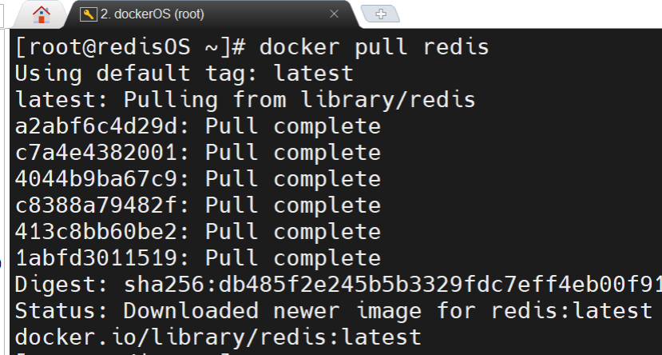
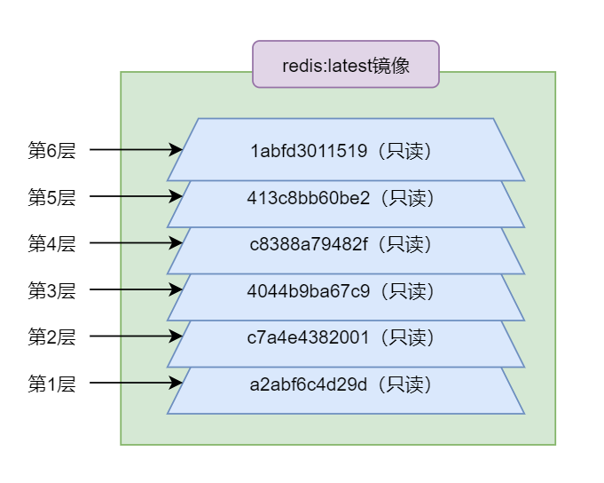
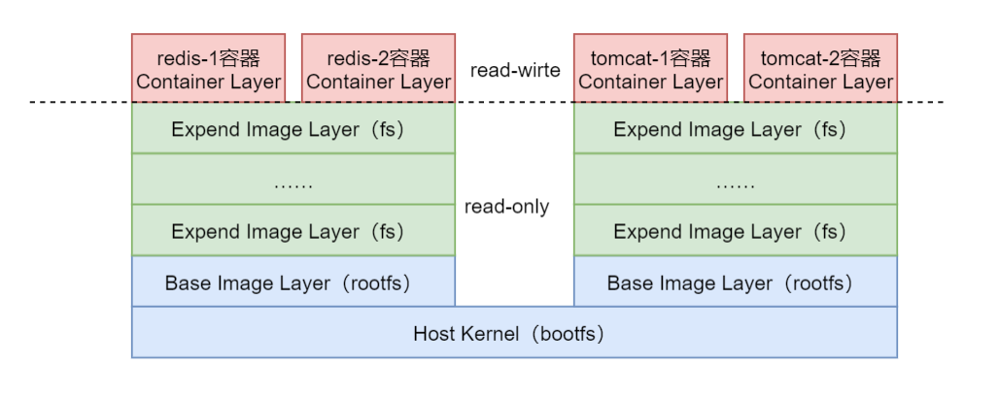
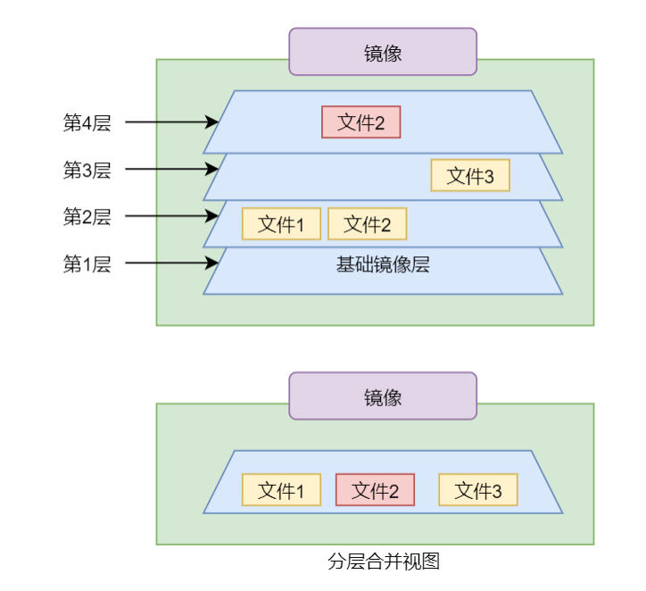
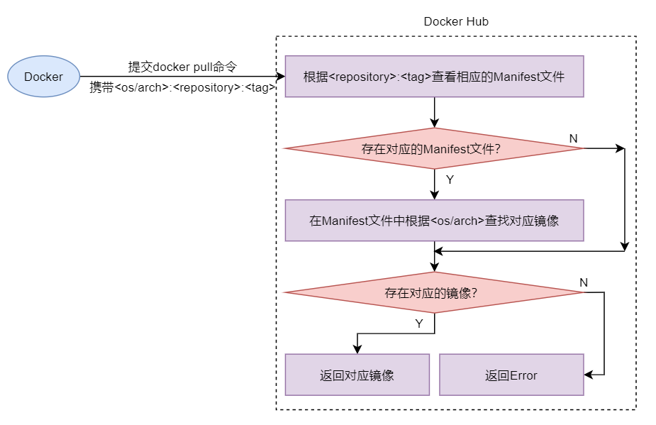

镜像基础
- 镜像是一种轻量级、可执行的独立软件包/一个精简的操作系统
- 镜像中包含应用软件及应用软件的运行环境。具体来说镜像包含运行某个软件所需的所有内容，包括代码、库、环境变量和配置文件等
- 镜像的运行时是容器
- 镜像中不包含内核，其共享宿主机的内核
镜像中心与仓库
镜像中心默认使用的都是 Docker 官方的 Docker Hub；也可指定第三方镜像中心< domain-name（域名或 IP）>/< repository>
镜像仓库：
-
Docker Official Image Docker 官方镜像仓库；官方镜像仓库的名称< repository >一般形式为：< software-name >即软件的名称
-
Verified Publisher 已验证第三方发布者仓库；非官方镜像仓库名称< repository >一般形式为：< username >/< software-name >
-
Sponsored OSS 由 Docker 公司赞助开发的镜像仓库
-
无认证仓库 没有以上任何标识第三方仓库的
镜像命令
对于任何镜像，都可通过< repository >:< tag >进行唯一定位。其中< tag >一般称为镜像的版本号。< tag> 中有一个比较特殊的版本——latest。如果不指定，默认< tag >即为 latest
digest，是镜像内容的一个 Hash 值，即所谓的 Content Hash（内容散列）。只要镜像内容发生了变更，其内容散列值就一定会发生改变。摘要的主要作用是区分不同时间下使用了相同< repository >:< tag >的不同镜像
|
|
镜像分层
Docker 镜像由一些松耦合的只读镜像层组成，Docker Daemon 负责堆叠这些镜像层，并将它们关联为一个统一的整体，即对外表现出的是一个独立的对象。
通过 docker pull 命令拉取指定的镜像时，每个 Pull complete 结尾的行就代表下载完毕了一个镜像层


- 每个分层都是只读的，所有对分层的修改都是以新分层的形式出现，并不会破坏原分层内容
- 在不同镜像间实现资源共享，即不同镜像对相同下层镜像的复用
- 对于 docker pull 命令，其在拉取之前会先获取到其要拉取镜像的所有 ImageID，然后在本地查找是否存在这些分层。如果存在，则不再进行拉取，而是共享本地的该分层。大大节点的存储空间与网络带宽，提升了拉取效率。
镜像层构成
每个镜像层由两部分构成：镜像文件系统与镜像 json 文件
- 镜像文件系统就是对镜像占有的磁盘空间进行管理的文件系统，拥有该镜像所有镜像层的数据内容。
- 而镜像 json 文件则是用于描述镜像的相关属性的集合
一个 docker 镜像的文件系统 FS 由多层只读的镜像层组成，根据其位置与功能的不同可分为两类：基础镜像层（基础镜像层的文件统称为根文件系统 rootfs）与扩展镜像层（对基础镜像层功能的扩展。在 Dockerfile 中每条用于某项特定功能的指令都会生成一个扩展镜像层）

镜像运行了起来就形成了容器，容器的文件系统是在镜像最外层之上增加了一个可读写的容器层
对文件的任何更改都只存在于容器层。因此任何对容器的操作都不会影响到镜像本身；要修改某文件，容器层会首先把在镜像层找到的文件 copy 到容器层，然后再进行修改。删除文件也只会将存在于容器层中的文件副本删除
最终合并分层中覆盖不同分层间重复的文件

多架构镜像
由于不同的 OS 采用的不同的类库，不同的 ARCH 采用的不同的指令系统，所以针对不同的 OS/ARCH 所设计的镜像也就是不同的。
通过 docker pull 命令拉取到的一定是针对拉取用户操作系统/系统架构的镜像，无需用户自己考虑操作系统/系统架构问题
镜像的多架构信息保存在 Manifest 文件中
